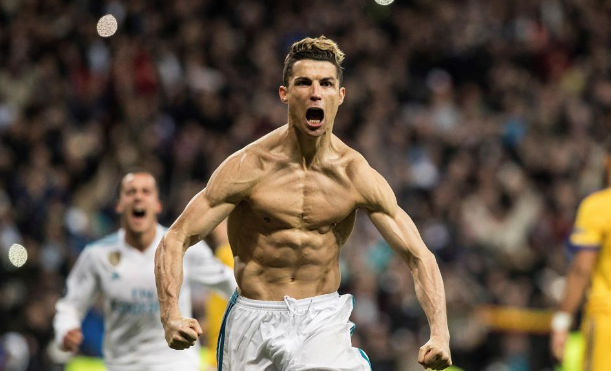
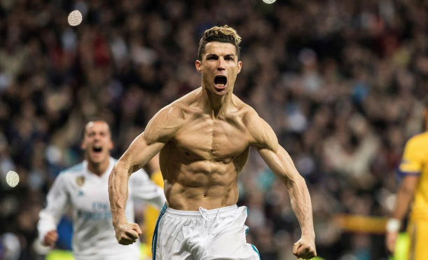

足坛评价
弗格森：C罗是这个时代最特殊的球员。他通过不断地努力训练，射门技术、左右脚技术、头球能力和弹跳力不断精进。他对于足球的热爱和渴望是不可思议的，每堂训练课，他都充满了向往和期待，每天C罗都在变得更好，他对于足球是真的热爱。
齐达内：C罗是个与众不同的球员，因为他能做到其他球员做不到的事情。在我眼中，C罗就是世界最佳，是个完美的球员，拥有很高的心理素质，他能为球队作出巨大贡献。
斯科拉里：梅西很不错，但C罗更出色。梅西是巴萨队内公认的头号球星，但皇马不同。我感觉皇马其他球员对C罗的头牌地位并不太认可，但尽管如此，C罗还是踢出了媲美梅西的表现。因此，我认为最好的球员是C罗。
勒夫：他是世界上最出色的球员，毫无疑问。鲁尼是最出色的前锋，但克里斯蒂安是另外一种类型他更有冲击力，能做更多的事情，并且每一次他给人带来的冲击都是非常大的。当你看他启动的时候，你不知道他下一步将做什么，但你知道肯定会发生什么。他总是非常有威胁，他是一个非常职业的球员，每时每刻都想着成为最佳。他是难以置信的。我对他充满尊敬>
媒体评价
在技术层面，C罗的柔韧性好，速度快，射门有力，技术出众，同时头球能力强大；C罗是进球的代名词，只要他在场上，那么在接近对方禁区时，他任何的动作都可能转化为进球。
无论是快是慢，带还是不带球，他都让对手无法提防，无法揣摩。在刚开始职业生涯的时候，C罗更熟悉的是没有防守队员的情况下的发挥。后来，他知道如何一对一，知道怎样最有效地突破和射门。C罗的进步很快，而且从未停止，最宝贵的地方在于，他始终都懂得保护自己的特点，那就是动作的独创性，他的速度和他的爆发力，他的冷静和从容，他的过人和转身。还有他的射门，他的体力，他的左右脚，他的准确，他的效率，他的集体意识，种种优点让他成为可以独自决定一场比赛的那个人。
C罗优秀的地方在于自己动作的掌控，其次是速度和力量。他的控球技术和带球技术是无可挑剔；他惊人的加速能力使得防范他成为不可能。无论是从中路还是两翼，一旦得球直插前场，他的加速和变速使得他的所有动作都变得从容，在最后20米之内成为扭转比赛的关键；他的力量主要体现在射门上，他最擅长的是右脚，定位球总是使用右脚，但他左脚同样能踢出弧线，技术加上力量，还有细腻的脚法，使得他成为一个定位球高手；他的头球同样完美，1.85米的身高加上出众的弹跳力使得头球成为他的另外一个特长。
在职业精神层面，C罗能在30岁后捧起金球奖，其职业精神是很重要的原因，科学健康的饮食、良好的生活习惯、勤勉的训练态度等均在其列。这些看似容易，能够坚持下来却并不简单。他在不被看好的年纪让球迷为之疯狂，生涯5次技术转型，他在与伤病年龄的赛跑中完胜。坚毅自律、自强不息，人们爱慕他的球技，更爱他卓越的精神力量。
在生活层面，C罗热情开朗、能歌善舞，热衷公益，身边总有那么多哥们儿。他并不完美，但从不掩盖自身缺点。他拥有巨额的财富，绝妙的球技，同时他也个性张扬，特立独行。
 
